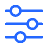
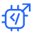
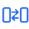
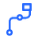
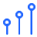

Chat
Richieste e conversazioni
funzioni-sistemi/chatDesign System · tavola 25Nome, significato, file e tavola di origine. Usa la ricerca del browser per un concetto.
Richieste e conversazioni
funzioni-sistemi/chatDesign System · tavola 25Contenuti da consultare
funzioni-sistemi/documentiDesign System · tavola 25Interfacce per gli utenti
funzioni-sistemi/applicazioniDesign System · tavola 25Passaggi da orchestrare
funzioni-sistemi/workflowDesign System · tavola 25Elaborazione e generazione
funzioni-sistemi/modello-aiDesign System · tavola 25
Criteri e verifiche
funzioni-sistemi/controlliDesign System · tavola 25Sistemi aziendali
funzioni-sistemi/erp-crmDesign System · tavola 25Dati e conoscenza
funzioni-sistemi/fontiDesign System · tavola 25Strumenti e integrazioni
funzioni-sistemi/serviziDesign System · tavola 25Ruoli e responsabilità
funzioni-sistemi/governanceDesign System · tavola 25
Costruire e migliorare gli agenti
funzioni-sistemi/sviluppo-aiDesign System · tavola 25
Collegare strumenti e dati
funzioni-sistemi/integrazioneDesign System · tavola 25Provare e verificare le soluzioni
funzioni-sistemi/sperimentazioneDesign System · tavola 25Seguire il sistema nel tempo
funzioni-sistemi/aggiornamentoDesign System · tavola 25Riutilizzare componenti già pronti
funzioni-sistemi/riusoDesign System · tavola 25Eseguire attività ripetitive
funzioni-sistemi/automazioneDesign System · tavola 25Progettare con chi usa il processo
funzioni-sistemi/collaborazioneDesign System · tavola 25Aiutare i team a cambiare il lavoro
funzioni-sistemi/adozioneDesign System · tavola 25Priorità, roadmap e risultati
ruoli-attivita/coordinamentoDesign System · tavola 26Realizzazione delle soluzioni
ruoli-attivita/sviluppoDesign System · tavola 26Obiettivi e risorse
ruoli-attivita/sponsor-businessDesign System · tavola 26Processo, casi reali e uso
ruoli-attivita/process-ownerDesign System · tavola 26Sistemi, accessi e integrazioni
ruoli-attivita/itDesign System · tavola 26Permessi, policy e controlli
ruoli-attivita/sicurezzaDesign System · tavola 26Allineare il team sul lavoro
ruoli-attivita/workshopDesign System · tavola 26
Priorità e prossimi rilasci
ruoli-attivita/roadmapDesign System · tavola 26Documenti e contesto da consultare
ruoli-attivita/conoscenzaDesign System · tavola 26Verificare casi e approvare risultati
ruoli-attivita/validazioneDesign System · tavola 26Portare le soluzioni in uso
ruoli-attivita/deploymentDesign System · tavola 26Risultati, utilizzo e anomalie
ruoli-attivita/monitoraggioDesign System · tavola 26Costruzione assistita
dualos/architectDesign System · tavola 27Istruzioni e strumenti
dualos/agenteDesign System · tavola 27Accesso da client AI
dualos/mcpDesign System · tavola 27Bozza modificabile
dualos/draftDesign System · tavola 27Versione pubblicata
dualos/versioneDesign System · tavola 27Singolo run del processo
dualos/esecuzioneDesign System · tavola 27Orari e intervalli
dualos/pianificazioneDesign System · tavola 27Segnale di ripresa
dualos/callbackDesign System · tavola 27File di lavoro dell’agente
dualos/workspaceDesign System · tavola 27Passaggi e risultati
dualos/logDesign System · tavola 27Risultato per chi lavora
dualos/outputDesign System · tavola 27Evento che avvia un workflow
dualos/triggerDesign System · tavola 27Il risultato che vogliamo raggiungere
strategia-business/obiettiviDesign System · tavola 28L’ordine delle iniziative da avviare
strategia-business/prioritaDesign System · tavola 28Risorse da destinare al progetto
strategia-business/investimentoDesign System · tavola 28Benefici e costi da confrontare
strategia-business/valore-economicoDesign System · tavola 28Problemi concreti da affrontare
strategia-business/casi-dusoDesign System · tavola 28Possibili evoluzioni da valutare
strategia-business/scenariDesign System · tavola 28Scegliere fra alternative esplicite
strategia-business/decisioneDesign System · tavola 28La struttura di sistemi e soluzioni
strategia-business/architetturaDesign System · tavola 28Vincoli e criticità da gestire
strategia-business/rischioDesign System · tavola 28Indicatori per valutare i risultati
strategia-business/misurazioneDesign System · tavola 28Estendere una soluzione a più contesti
strategia-business/scalabilitaDesign System · tavola 28Capacità che distinguono l’azienda
strategia-business/vantaggio-competitivoDesign System · tavola 28
Capacità presenti e da sviluppare
competenze-cambiamento/competenzeDesign System · tavola 29Percorsi per imparare a usare l’AI
competenze-cambiamento/formazioneDesign System · tavola 29Applicare ciò che si è imparato
competenze-cambiamento/esercitazioneDesign System · tavola 29Lavorare insieme sui casi reali
competenze-cambiamento/affiancamentoDesign System · tavola 29Accompagnare il cambiamento nei team
competenze-cambiamento/change-managementDesign System · tavola 29Condividere esperienze e conoscenza
competenze-cambiamento/communityDesign System · tavola 29Individuare le persone adatte
competenze-cambiamento/ricerca-talentiDesign System · tavola 29Valutare competenze e motivazione
competenze-cambiamento/selezioneDesign System · tavola 29Accompagnare l’ingresso nel team
competenze-cambiamento/inserimentoDesign System · tavola 29Ridefinire attività e responsabilità
competenze-cambiamento/evoluzione-dei-ruoliDesign System · tavola 29Spiegare il cambiamento alle persone
competenze-cambiamento/comunicazioneDesign System · tavola 29Raccogliere osservazioni dal lavoro
competenze-cambiamento/feedbackDesign System · tavola 29